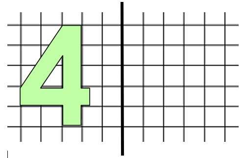

Op een zonnige lentedag gaat de klas van juf Vicky bloemetjes plukken op de weide naast de school. Kan jij juf Vicky helpen rekenen?
Een verhaal over prille liefde en sterke gevoelens.
Een sprookje op de schoolbanken.
Op een zonnige lentedag gaat de klas van juf Vicky bloemetjes plukken op de weide naast de school. Kan jij juf Vicky helpen rekenen? (2e & 3e leerjaar)
Lesdoelen:
De leerlingen vullen de eenvoudige vraagstukken aan, waarin maaltafels en optellingen verwerkt zitten.
De leerlingen spiegelen figuren om een as, zonder gebruik van een spiegel.
De leerlingen berekenen de totaalprijs door verschillende prijzen op te tellen.
De leerlingen zetten de prijzen om aan de hand van hoeveel ze van elk ingrediënt nodig hebben.
Leerplandoelen:
Opdracht 1
WDrv4: Handig hoofdrekenen
Delen > natuurlijke getallen > de deeltafels tot 10 paraat kennen
Delen > natuurlijke getallen > de deeltafels tot 10 inzichtelijk verwerven in betekenisvolle situaties
Opdracht 2
WDmk3: Inzicht verwerven in meetkundige relaties
Spiegelingen en symmetrie > onderzoeken van spiegelbeelden door actief ervaringen op te doen
Spiegelingen en symmetrie > onderzoeken en vaststellen van spiegelbeelden in de omgeving en in vlakke figuren door een spiegel te gebruiken of door te vouwen
Spiegelingen en symmetrie > spiegelbeelden van eenvoudige figuren tekenen op geruit papier
Opdracht 3
WDmm3: Schatten, meten en rekenen met maateenheden
Geld > samenstellen van bedragen in betekenisvolle situaties
Geld > rekenen met geld en gepast betalen op verschillende manieren in eenvoudige betekenisvolle situaties
Geld > de afkortingen/symbolen euro, EUR, € kennen en gebruiken
Geld > rekenen met geld en gepast betalen op verschillende manieren in betekenisvolle situaties
Eindtermen:
1.13 De leerlingen voeren opgaven uit het hoofd uit waarbij ze een doelmatige oplossingsweg kiezen op basis van inzicht in de eigenschappen van bewerkingen en in de structuur van getallen:
Optellen en aftrekken tot honderd
Optellen en aftrekken met grote getallen met eindnullen
Vermenigvuldigen met en delen naar analogie met de tafels
1.10 De leerlingen zijn in staat tot een onmiddellijk geven van correcte resultaten bij optellen en aftrekken tot 10, bij tafels van vermenigvuldiging tot en met de tafels van 10 en de bijhorende deeltafels.
1.23 De leerlingen kunnen in een zinvolle context eenvoudige breuken en kommagetallen optellen en aftrekken. In een zinvolle context kunnen zij eveneens een eenvoudige breuk vermenigvuldigen met een natuurlijk getal.
3.6 De leerlingen kunnen de begrippen symmetrie, gelijkvormigheid en gelijkheid ontdekken in de realiteit. Ze kunnen zelf eenvoudige geometrische figuren maken.
OEFENING 1 (2de graad)
Op een zonnige lentedag gaat de klas van juf Vicky bloemetjes plukken op de weide naast de school. Kan jij juf Vicky helpen rekenen?
1. De 9 meisjes van haar klas gaan alle rode bloemen plukken. Op het veld staan 45 rode bloemen. Hoeveel bloemen moet elk meisje plukken?
________________________________________________________________________________________________________________________
2. De jongens beslissen om alle blauwe bloemen te plukken. In totaal staan er 28 blauwe bloemen. Er zitten 7 jongens in de klas. Hoeveel bloemen plukt elke jongen?
________________________________________________________________________________________________________________________
3. Hoeveel bloemen stonden er in het begin op de weide als je weet dat er ook nog eens 18 witte bloemen stonden?
________________________________________________________________________________________________________________________
OEFENING 2 (3e graad)
Kan jij de figuren spiegelen zonder gebruik van een spiegel?
OEFENING 3 (2de graad)
Wanneer de lente begint, bakt oma altijd haar lekkere lentetaart met verschillende soorten fruit erin. Hiervoor gaat ze eerst naar de winkel, kan jij haar helpen door uit te rekenen hoeveel haar boodschappen zullen kosten?
Wanneer ze in de winkel komt ziet ze de prijzen van de producten:
Suiker: €1,00 per pak
Melk: €3,00 per fles
Eieren: €2,00 voor 6 eieren (je moet ze per 6 kopen)
Bloem: €2,50 per pak
Aardbeien: €4,50 per bakje
Kiwi’s: €0,80 per kiwi
Perziken: €0,50 per perzik
Appels: €0,30 per appel
Reken nu uit hoeveel oma zal moeten betalen voor alle ingrediënten samen. Let op! Sommige prijzen zul je moeten delen of vermenigvuldigen. Kijk goed naar hoeveel oma van elks nodig heeft!
____________________________________________________________________________________________________________________________________________________________________________________________________________________________________________________________________________________________________________________________________________________________________________________
Oma heeft in totaal €22,00 bij. Zal ze hier mee toekomen?
Ja, ze heeft_____________________ over, of nee, ze komt __________________________ tekort.
Laureen sluit haar boekje. “Het heeft toch geen zin om het op te schrijven! Ik heb geen goede ideeën!” denkt ze luidop. Ze doet haar handschoenen weer aan. “Het is toch al april? De zon zou moeten schijnen en het zou opnieuw warm moeten worden!”, denkt ze in zichzelf. Een meisje komt naast haar zitten. “Wie ben jij? Ben je nieuw hier? Ik heb je nog nooit gezien. Oh, natuurlijk ben je dan nieuw! Stom van me. Wat doe je?”, ratelt ze. “Euhm”, hapert Laureen verlegen. “Oh, ik vergeet me al bijna voor te stellen! Ik ben Julia!”, roept ze luid. “Hey, euhm, ik ben, euhm, Laureen.”, fluistert ze bijna. Julia roept: “Hey, joh, niet zo verlegen! Wat was je daar trouwens aan het doen met dat boekje daarnet? Is het je dagboek? Mag ik weten wat er is staat? Ben je verliefd? Op wie?”. “Ik ben niet verliefd.”, zegt Laureen stil. “Ah, komaan, aan mij kan je het wel vertellen! Je kent mij toch? Als je mijn naam weet, dan ken je mij. Mij kan je vertrouwen!”, roept ze opnieuw heel enthousiast. “Het is geen dagboek.”, zegt ze beschaamd. “Maar, wat dan? Zeg het! Please?”. “Het is maar stom.”, zegt ze. Julia roept weer: “Ik zal niet lachen! Alstublieft? Pleaseeeeeeeeeee…?!”
Een tijdje later was een heel onopvallende grijze muis in de klas was opeens niet zo onopvallend meer. De presentatie van Wouter over zijn lievelingsboek, was zo fantastisch! Niemand was verrast over de 20/20 die hij behaalde. Laureen was ervan onder de indruk! De weken slopen voorbij en de gevoelens werden steeds sterker. Laureen ploft neer op haar bed. Dit is de enige plek die echt vertrouwd voelt. Hier kan ze zichzelf zijn!